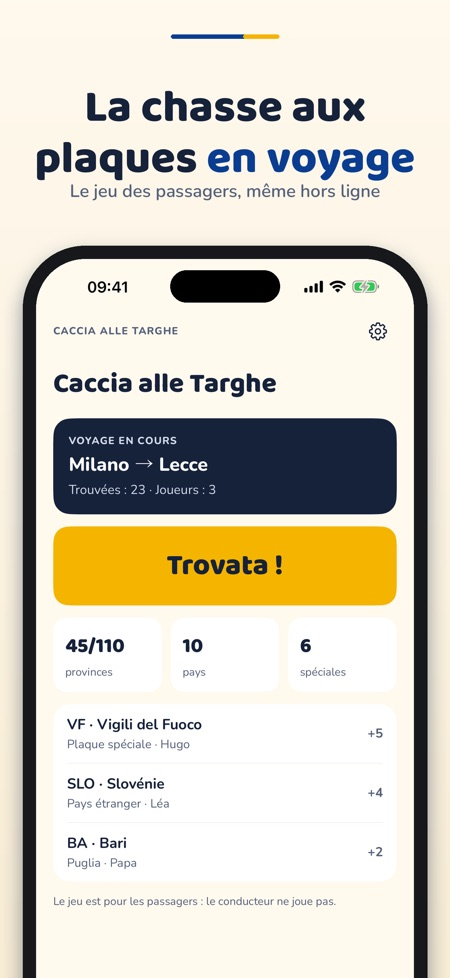
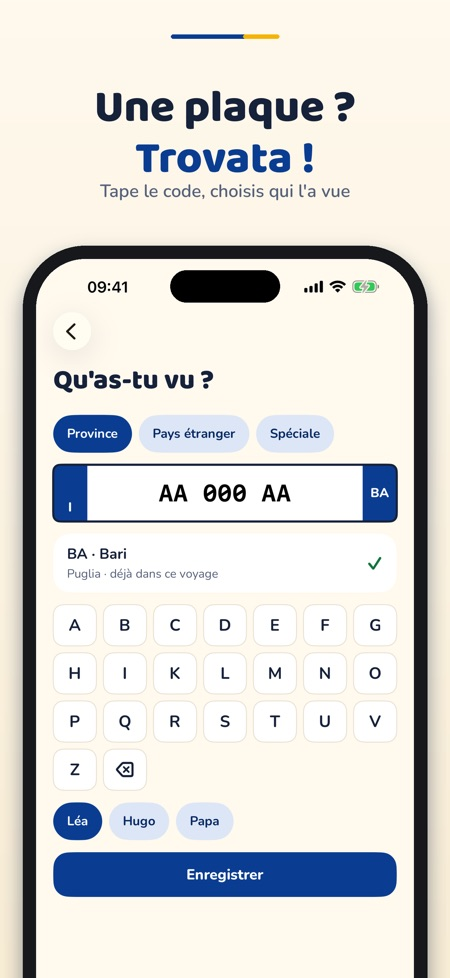
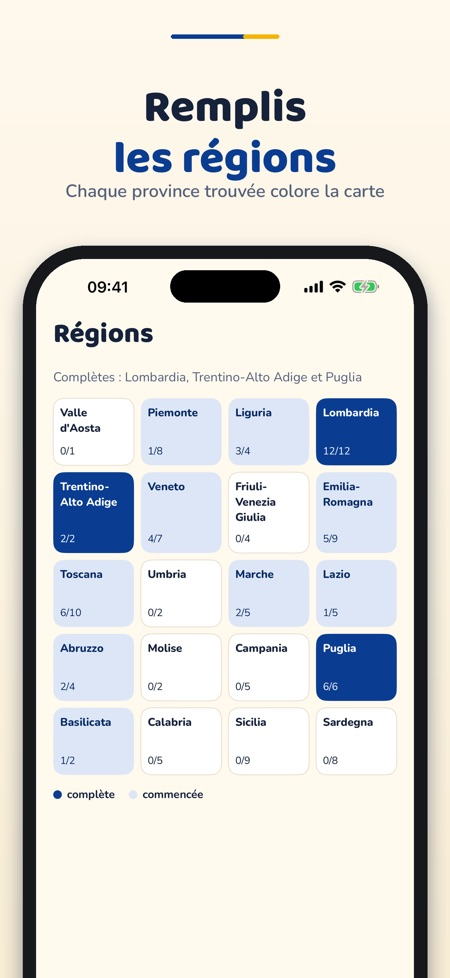

Jeu de plaques en voyage. Le jeu des trajets en voiture : repérez les départements, les cantons suisses, les provinces italiennes et les pays étrangers, puis défiez la famille.



Caccia alle Targhe est un jeu pour les passagers pendant les trajets en voiture : collectionnez les codes des plaques, remplissez les régions et défiez la famille.
Les provinces italiennes, un voyage et deux joueurs sont utilisables sans achat. Un achat unique débloque les packs France et Suisse, les plaques spéciales, les pays, les voyages illimités, jusqu'à six joueurs et le quiz. Pas d'abonnement.
Le jeu est pour les passagers, pas pour le conducteur. Seuls les codes (département, pays, catégorie) sont enregistrés, jamais les numéros de plaque complets.